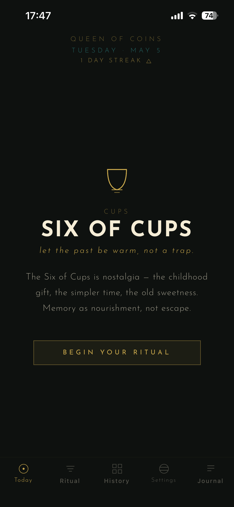
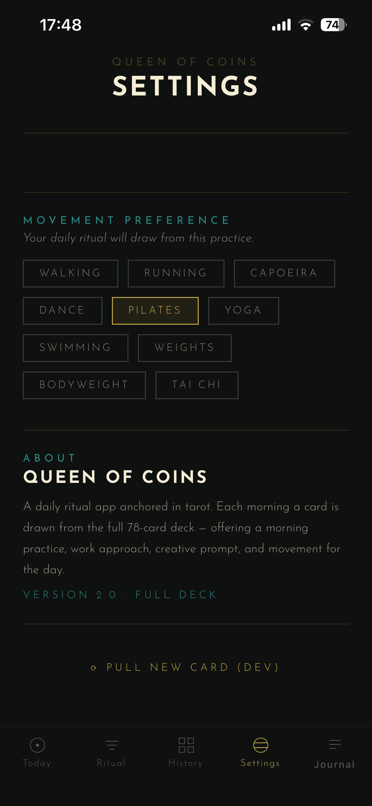
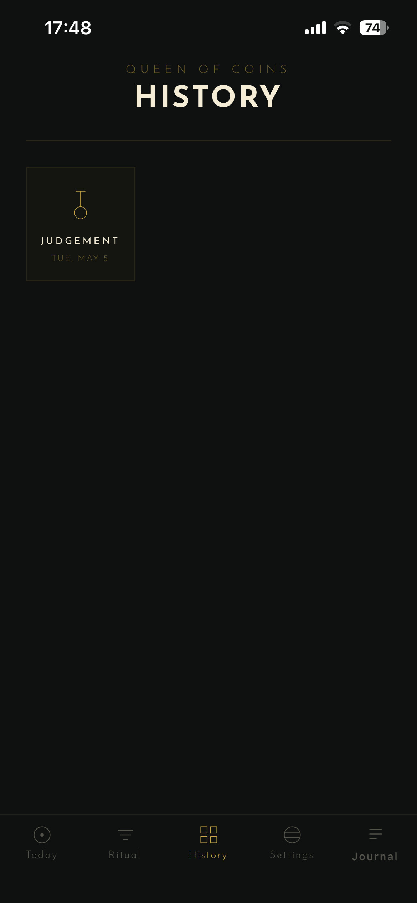
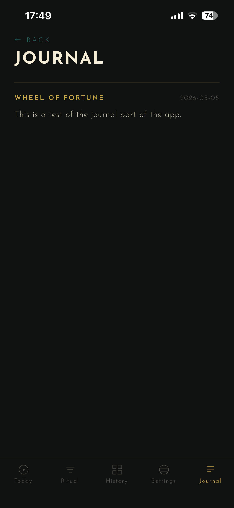
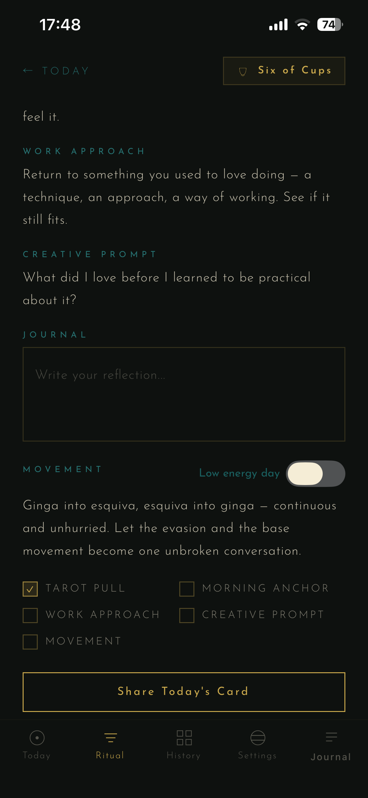
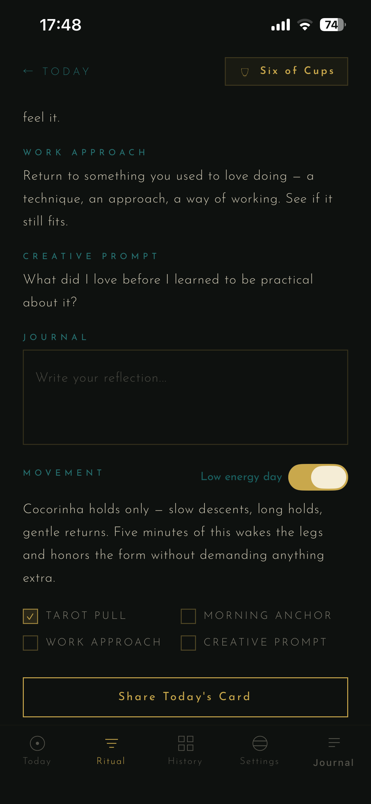
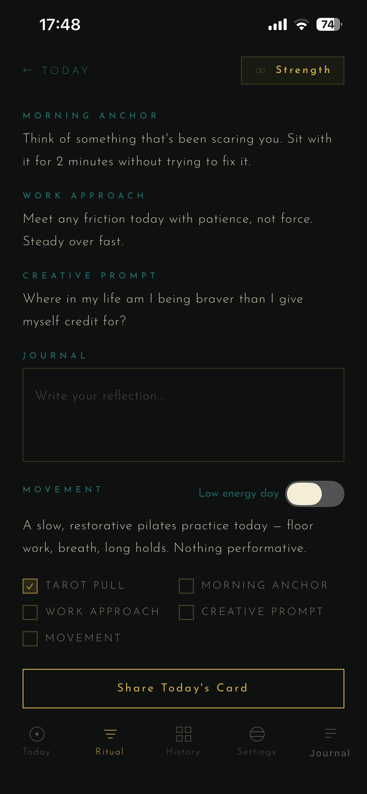
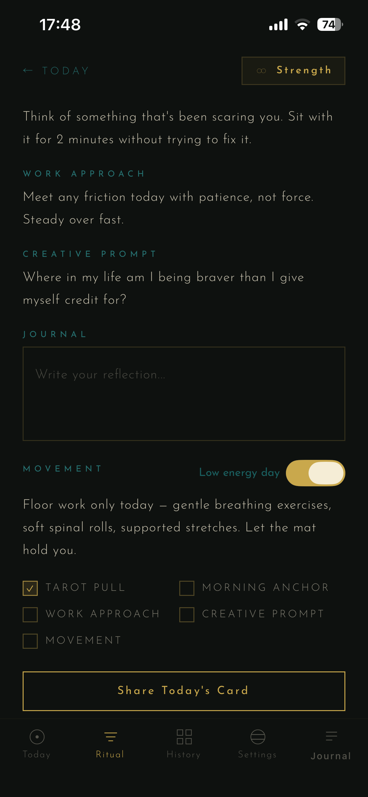

Case Study · 2025–2026
a tarot-anchored daily ritual app
01 · Origin
After leaving a career in film and TV art department coordination, I found myself working from home with no commute, no external schedule, no built-in rhythm. The structure that had governed my body and my days for years was gone — and it was taking a toll.
I already read tarot. I'd used it for years as a reflective practice — a way of framing the day, asking good questions, sitting with uncertainty without trying to immediately resolve it. What I didn't have was a tool that made that practice feel intentional and complete: something that connected the card to movement, to work, to creativity, all in one place.
So I built it. Queen of Coins became the project where my background in tarot, my interest in wellness, and my development work all converged. It started as a mobile app idea and became a daily practice I will actually use.
02 · Screens
Each screen is designed to feel deliberate. The card pull, the ritual, the journal, and the history all read as parts of a single continuous practice rather than separate features.

Today

Settings

History

Journal
Movement Preference System
The same card generates a completely different movement suggestion depending on your practice — and again when the low energy toggle is on. Each combination is authored.

Capoeira

Capoeira · Low Energy

Pilates

Pilates · Low Energy